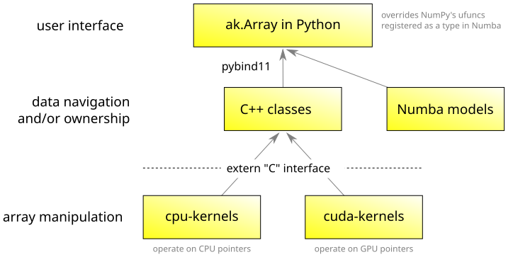

API Reference#
High-level data types: ak.Array for an array of items (records, numbers, strings, etc.) and ak.Record for a single record. Arrays and records are read-only structures, but functions that manipulate them efficiently share data between the input and output.
Append-only data type: ak.ArrayBuilder discovers its type from the sequence of append operations called on it.
Adding methods, overloading operators: ak.behavior for a global registry; see also for overloading individual arrays.
Describing an array: ak.is_valid, ak.validity_error, ak.type, ak.parameters, _auto/ak.keys.
Converting from other formats: ak.from_numpy, ak.from_iter, ak.from_json, ak.from_awkward0. Note that the ak.Array and ak.Record constructors use these functions.
Converting to other formats: ak.to_numpy, ak.to_list, ak.to_json, ak.to_awkward0.
Conversion functions used internally: ak.to_layout, ak.regularize_numpyarray.
Alternative to filtering: ak.mask, which is the same as array.mask[filter]. Creates an array with missing values instead of removing values.
Number of elements in each list: ak.num (not to be confused with the reducer ak.count).
Making and breaking arrays of records: ak.zip and ak.unzip.
Manipulating records: ak.with_name, ak.with_field.
Manipulating parameters: ak.with_parameter, ak.without_parameters.
Broadcasting: ak.broadcast_arrays forms an explicit broadcast of a set of arrays, which usually isn’t necessary. This page also describes the general broadcasting rules, though.
Merging arrays: ak.concatenate, ak.where.
Flattening lists and missing values: ak.flatten removes a level of list structure. Empty lists and None at that level disappear. Also useful for eliminating None in the first dimension.
Inserting, replacing, and checking for missing values: ak.pad_none, ak.fill_none, ak.is_none.
Converting missing values to and from empty lists: ak.singletons turns [1, None, 3] into [[1], [], [3]] and ak.firsts turns [[1], [], [3]] into [1, None, 3]. This can be useful with ak.argmin and ak.argmax.
Combinatorics: ak.cartesian produces tuples of n items from n arrays, usually per-sublist, and ak.combinations produces unique tuples of n items from the same array. To get integer arrays for selecting these tuples, use ak.argcartesian and ak.argcombinations.
Partitioned arrays: ak.partitions reveals how an array is internally partitioned (if at all) and ak.partitioned, ak.repartition create or change the partitioning.
Virtual arrays: ak.virtual creates an array that will be generated on demand and ak.with_cache assigns a new cache to all virtual arrays in a structure.
NumPy compatibility: ak.size, ak.atleast_1d.
Reducers: eliminate a dimension by replacing it with a count, sum, logical and/or, etc. over its members. These functions summarize the innermost lists with axis=-1 and cross lists with other values of axis. They never apply to data structures, only numbers at the innermost fields of a structure.
ak.count: the number of elements (not to be confused with ak.num, which interprets
axisdifferently from a reducer).ak.count_nonzero: the number of elements that are not equal to zero or False.
ak.sum: adds values with identity 0.
ak.prod: multiplies values with identity 1.
ak.any: reduces with logical or, “true if any members are non-zero.”
ak.all: reduces with logical and, “true if all members are non-zero.”
ak.min: minimum value; empty lists result in None.
ak.max: maximum value; empty lists result in None.
ak.argmin: integer position of the minimum value; empty lists result in None.
ak.argmax: integer position of the maximum value; empty lists result in None.
Non-reducers: not technically reducers because they don’t obey an associative law (e.g. the mean of means is not the overall mean); these functions nevertheless have the same interface as reducers.
ak.moment: the “nth” moment of the distribution;
0for sum,1for mean,2for variance without subtracting the mean, etc.ak.mean: also known as the average.
ak.var: variance about the mean.
ak.std: standard deviation about the mean.
ak.covar: covariance of two datasets.
ak.corr: correlation of two datasets (covariance normalized to variance).
ak.linear_fit: linear fits, possibly very many of them.
ak.softmax: the softmax function of machine learning.
String behaviors: defined in the ak.behaviors.string submodule; rarely needed for analysis (strings are a built-in behavior).
Partition functions: defined in the ak.partition submodule; rarely needed for analysis: use ak.partitions, ak.partitioned, ak.repartition.
Numba compatibility: ak.numba.register informs Numba about Awkward Array types; rarely needed because this should happen automatically.
Pandas compatibility: ak.to_pandas turns an Awkward Array into a list of DataFrames or joins them with pd.merge if necessary.
NumExpr compatibility: ak.numexpr.evaluate and ak.numexpr.re_evaluate are like the NumExpr functions, but with Awkward Array support.
Autograd compatibility: ak.autograd.elementwise_grad is like the Autograd function, but with Awkward Array support.
Layout nodes: the high-level ak.Array and ak.Record types hide the tree-structure that build the array, but they can be accessed with ak.Array.layout. This layout structure is the core of the library, but usually doesn’t have to be accessed by data analysts.
ak.layout.Content: the abstract base class.
ak.layout.EmptyArray: an array of unknown type with no elements (usually produced by ak.ArrayBuilder, which can’t determine type at a given level without samples).
ak.layout.NumpyArray: any NumPy array (e.g. multidimensional shape, arbitrary dtype), though usually only one-dimensional arrays of numbers.
ak.layout.RegularArray: splits its nested content into equal-length lists.
ak.layout.ListArray: splits its nested content into variable-length lists with full generality (may use its content non-contiguously, overlapping, or out-of-order).
ak.layout.ListOffsetArray: splits its nested content into variable-length lists, assuming contiguous, non-overlapping, in-order content.
ak.layout.RecordArray: represents a logical array of records with a “struct of arrays” layout in memory.
ak.layout.Record: represents a single record (not a subclass of ak.layout.Content in Python).
ak.layout.IndexedArray: rearranges and/or duplicates its content by lazily applying an integer index.
ak.layout.IndexedOptionArray: same as ak.layout.IndexedArray with missing values as negative indexes.
ak.layout.ByteMaskedArray: represents its content with missing values with an 8-bit boolean mask.
ak.layout.BitMaskedArray: represents its content with missing values with a 1-bit boolean mask.
ak.layout.UnmaskedArray: specifies that its content can contain missing values in principle, but no mask is supplied because all elements are non-missing.
ak.layout.UnionArray: interleaves a set of arrays as a tagged union, can represent heterogeneous data.
ak.layout.VirtualArray: generates an array on demand from an ak.layout.ArrayGenerator or a ak.layout.SliceGenerator and optionally caches the generated array in an ak.layout.ArrayCache.
Most layout nodes contain another content node (ak.layout.RecordArray and ak.layout.UnionArray can contain more than one), thus forming a tree. Only ak.layout.EmptyArray and ak.layout.NumpyArray cannot contain a content, and hence these are leaves of the tree.
Note that ak.partition.PartitionedArray and its concrete class, ak.partition.IrregularlyPartitionedArray, are not ak.layout.Content because they cannot be nested within a tree. Partitioning is only allowed at the root of the tree.
Iterator for layout nodes: ak.layout.Iterator (used internally).
Layout-level ArrayBuilder: ak.layout.ArrayBuilder (used internally).
Index for layout nodes: integer and boolean arrays that define the shape of the data structure, such as boolean masks in ak.layout.ByteMaskedArray, are not ak.layout.NumpyArray but a more constrained type called ak.layout.Index.
Identities for layout nodes: ak.layout.Identities are an optional surrogate key for certain join operations. (Not yet used.)
High-level data types:
This is the type of data in a high-level ak.Array or ak.Record as reported by ak.type. It represents as much information as a data analyst needs to know (e.g. the distinction between variable and fixed-length lists, but not the distinction between ak.layout.ListArray and ak.layout.ListOffsetArray).
ak.types.Type: the abstract base class.
ak.types.ArrayType: type of a non-composable, high-level ak.Array, which includes the length of the array.
ak.types.UnknownType: a type that is not known because it is represented by an ak.layout.EmptyArray.
ak.types.PrimitiveType: a numeric or boolean type.
ak.types.RegularType: lists of a fixed length; this
sizeis part of the type description.ak.types.ListType: lists of unspecified or variable length.
ak.types.RecordType: records with named fields or tuples with a fixed number of unnamed slots. The fields/slots and their types are part of the type description.
ak.types.OptionType: data that may be missing.
ak.types.UnionType: heterogeneous data selected from a short list of possibilities.
All concrete ak.types.Type subclasses are composable except ak.types.ArrayType.
Low-level array forms:
This is the type of a ak.layout.Content array expressed with low-level granularity (e.g. including the distinction between ak.layout.ListArray and ak.layout.ListOffsetArray). There is a one-to-one relationship between ak.layout.Content subclasses and ak.forms.Form subclasses, and each ak.forms.Form maps to only one ak.types.Type.
ak.forms.Form: the abstract base class.
ak.forms.IndexedOptionForm for ak.layout.IndexedOptionArray.
Internal implementation#
The rest of the classes and functions described here are not part of the public interface. Either the objects or the submodules begin with an underscore, indicating that they can freely change from one version to the next.
More documentation#
The Awkward Array project is divided into 3 layers with 5 main components.

The C++ classes, cpu-kernels, and gpu-kernels are described in the C++ API reference.
The kernels (cpu-kernels and cuda-kernels) are documented on the Kernel interface and specification page, with interfaces and normative Python implementations.